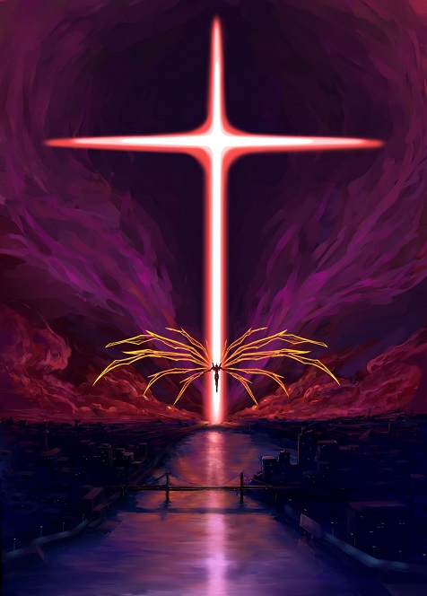
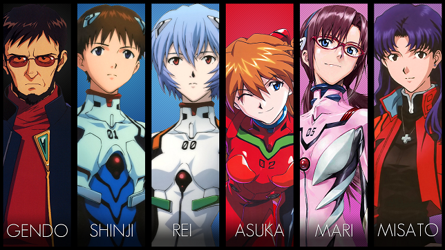

Neon Genesis Evanglion

Evangelion Plot
Neon Genesis Evangelion (新世紀エヴァンゲリオン, Shin Seiki Evangerion) is a Japanese media franchise created by Hideaki Anno and owned by Khara. Most of the franchise features an apocalyptic mecha action story, which revolves around the paramilitary organization NERV and their efforts in fighting hostile beings called Angels, using giant humanoids called Evangelions (or EVAs for short) that are piloted by select teenagers. Evangelion is set fifteen years after a worldwide cataclysm named Second Impact, particularly in the futuristic fortified city of Tokyo-3. The protagonist is Shinji Ikari, a teenage boy who is recruited by his father Gendo to the shadowy organization Nerv to pilot an Eva into combat.
Source: WikipediaMore about Evangelion
The series explores the experiences and emotions of Evangelion pilots and members of Nerv as they try to prevent Angels from causing more cataclysms. In the process, they are called upon to understand the ultimate causes of events and the motives for human action. The series has been described as a deconstruction of the mecha genre and an exploration of the human psyche. The intro song is also one of the most iconic anime intros in history, raising dopamine levels across the world by 10x. I'll make sure to link it and mildly expect a review of it in the comments of this assingnment...
Intro Song: A Cruel Angel's ThesisEvangelion Characters
| Name | Age | Gender |
|---|---|---|
| Shinji Ikari | 14 | Male |
| Misato Katsuragi | 25-30 | Female |
| Asuka Langley Soryu | 14 | Female |
| Rei Ayanami | 14 | Female |
| Gendo Ikari | ~50 | Male |
